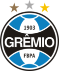

Grêmio
Grêmio Foot-Ball Porto Alegrense (conhecido apenas por Grêmio e cujo acrônimo é FBPA) é um clube de futebol brasileiro da cidade de Porto Alegre, no Rio Grande do Sul, fundado em 15 de setembro de 1903. Suas cores são o azul, preto e branco e tem como alcunhas Imortal Tricolor, Tricolor dos Pampas, Tricolor Gaúcho, entre outras.
Já foi campeão da Copa Libertadores da América em duas ocasiões e vice em duas outras oportunidades, o primeiro clube gaúcho campeão do Mundial de Clubes[11], sendo vice contra o Ajax da Holanda em outra ocasião, além de campeão da Recopa Sul-Americana. Conquistou dois Campeonatos Brasileiros da Série A, um Campeonato Brasileiro da Série B, cinco Copas do Brasil (o que o torna o maior vencedor desta competição, ao lado do Cruzeiro)[12], e uma Supercopa do Brasil, além de uma Copa Sul e um Campeonato Sul-Brasileiro. Já foi campeão trinta e seis vezes no Campeonato Gaúcho e uma vez na Copa FGF.[13][14]